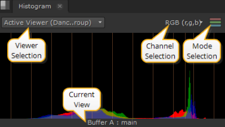
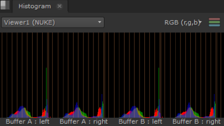
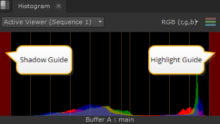
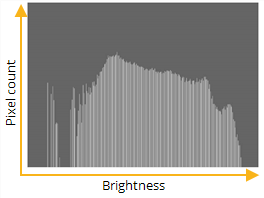

The content menu Windows > New Scope > Histogram provides three color channel and luma channel information that describes the distribution of red, green, blue, and luma pixels throughout the current frame.
The Histogram graphs the number of pixels at each brightness level, and from left to right, the areas of the Histogram represent shadow, mid tones, and highlights.

TIP: You can pan the view area by holding Alt, or the middle mouse button, and dragging in the panel.
There are a number of view controls on the Histogram tab:
• Viewer selection - if you have multiple Viewers open, use the dropdown menu to associate Histogram output to the required Viewer.
The default value, Active Viewer, automatically displays details on the last Viewer you selected.
• Channel selection - select the channels to output. The default setting displays RGB, but you can also view channels separately.
• Mode selection - select the mode to output. The default setting displays ganged RGB, but you can also view the channels separately by checking Parade.
• Current View - describes the view currently displayed in the scope, whether it's the A or B buffer and the view. The view defaults to main, unless main has been replaced in multi-view scripts or projects.
Depending on which Viewer tools and views you have active, you can have up to four scopes displayed at once.
For example, with two stereo Read nodes, one in each input buffer, and wipe and Anaglyph active, the scopes display something like this:

The scopes feature global customizable guides to help you view data. Navigate to Preferences > Panels > Scopes and enter values between 0 and 1 for Blackpoint and Whitepoint.
The guides at the edges of the Histogram turn red to warn you when the distribution is out of range:

The properties panel for the Histogram node includes a window that graphs the number of pixels at each brightness level. This is a useful gauge to see whether an image has a good distribution of shadows, midtones, and highlights.
|  |
| The histogram maps the distribution of shadows, midtones, and highlights. |
| 1. | Click Color > Histogram to insert a Histogram node at the appropriate place in your script. |
| 2. | Connect a Viewer to the output of the Histogram node so you can see the effect of your changes. |
| 3. | Drag the leftmost input range slider till it roughly lines up with the initial boundary of the histogram. |
| 4. | Drag the rightmost input range slider till it roughly lines up with the final boundary of the histogram. |
| 5. | Drag the middle input range slider to define the midtone, or neutral, value. |
|
|